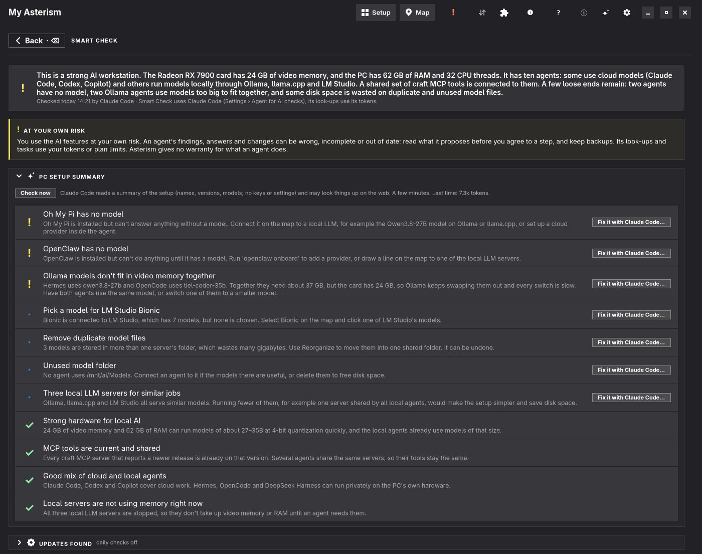

Manuale utente
Asterism
& AI Agents Map
I tuoi agenti IA, modelli locali, server MCP e skill su un'unica mappa
Manuale utente
I tuoi agenti IA, modelli locali, server MCP e skill su un'unica mappa
Questo manuale descrive un'applicazione disponibile in due edizioni:
| Edizione | Asterism | AI Agents Map |
|---|---|---|
| Che cos'è | Un'app autonoma GTK 4 / libadwaita per qualsiasi desktop Linux | Un plugin per il desktop Omarchy, aperto da un pulsante nella barra |
| Si installa da | AUR, AppImage o codice sorgente | L'Omarchy Plugin Marketplace |
| Aspetto | Segue la modalità chiara/scura e il colore d'accento del sistema | I colori del tema di Omarchy o l'aspetto Adwaita di GNOME |
| Cartella delle impostazioni | ~/.config/asterism/ | ~/.config/omarchy/ai-agents-map/ |
Tutto il resto — Setup, la mappa, il collegamento disegnando, gli LLM locali, i modelli, i server MCP e le skill — è uguale in entrambe. Ciò che vale per una sola edizione è contrassegnato con Asterism o Omarchy.
| Aggiungi | Un pulsante, una scheda o una voce di menu della finestra. |
|---|---|
| Impostazioni › Aspetto | Un percorso nell'interfaccia: apri le impostazioni, poi Aspetto. |
~/.agents/skills | Un file, una cartella o un comando. ~ è la tua cartella personale. |
| Ctrl+, | Una scorciatoia da tastiera. |
Nota Le note danno un contesto utile.
Suggerimento I suggerimenti mostrano una via più rapida o una buona abitudine.
Attenzione I riquadri di attenzione segnalano qualcosa di difficile da annullare.
Asterism mostra la configurazione IA del tuo computer come schede e come mappa: quali agenti di programmazione sono installati, quali modelli linguistici usano — servizi cloud e motori locali —, quali modelli questi servono e quali server MCP e skill ha ogni agente. E ti permette di cambiare questa configurazione disegnando linee.

La finestra principale: la mappa a tutta larghezza, sopra la scheda GPU, nell'intestazione il ! dei problemi aperti.
SKILL.md) e a volte script, che insegna a un agente un
compito preciso.Ogni modifica alle impostazioni di un agente viene mostrata prima, riga per riga, prima di scrivere qualsiasi cosa. Il vecchio file viene conservato come backup, e la barra che compare dopo la modifica offre Annulla. L'app in sé non gira mai con i permessi di amministratore; solo l'installazione di un agente fornito come pacchetto di sistema chiede la tua password, in un terminale che vedi.
Scegli uno di questi modi:
asterism con il tuo helper AUR.Asterism-<versione>-x86_64.AppImage dalla pagina delle release su
github.com/uBruckhaus/Asterism, rendilo eseguibile e avvialo. L'AppImage usa il Python 3 della tua
distribuzione con PyGObject, GTK 4 e libadwaita:
| Fedora | sudo dnf install python3-gobject gtk4 libadwaita |
|---|---|
| Ubuntu / Debian | sudo apt install python3-gi gir1.2-gtk-4.0 gir1.2-adw-1 |
| Arch | sudo pacman -S python-gobject gtk4 libadwaita |
bin/asterism in un clone del repository.L'app porta con sé le proprie icone, quindi non serve alcun font di icone. Per eseguire agenti dentro la finestra,
installa anche VTE per GTK 4 (vte4).
Installa il plugin dall'Omarchy Plugin Marketplace o in un terminale:
omarchy plugin add https://github.com/uBruckhaus/omarchy-ai-agents-map.git --enable
Nella barra compare un pulsante con un robot. Tutto il resto che serve è incluso in una normale installazione di
Omarchy. Per eseguire agenti dentro la finestra, installa VTE: sudo pacman -S vte4.
Alla prima apertura l'app chiede se aggiungersi al lanciatore di applicazioni. Lì non viene scritto nulla finché non dici di sì; puoi cambiarlo in seguito in Impostazioni › Nel lanciatore.
La finestra è una normale finestra d'applicazione: può essere affiancata, flottante, spostata su un altro spazio di lavoro e raggiunta con Alt+Tab. Asterism Un Asterism nuovo si apre sulla sua pagina di benvenuto: gli agenti e gli LLM locali installati su questo computer sono schede già spuntate, e Attiva li mette sulla mappa (vedi Configurare Asterism). Omarchy Il pulsante della barra apre la finestra, la porta in primo piano o la nasconde se è già davanti. Chiudere nasconde la finestra; il programma resta in background per riaprirsi all'istante.
Nota Se un agente è in esecuzione dentro la finestra, alla chiusura viene chiesto prima: Ferma e chiudi (che ferma anche l'LLM locale dell'agente e libera la sua memoria grafica) o Lascialo in esecuzione.
Omarchy omarchy plugin remove ubruckhaus.ai-agents-map.
Asterism Rimuovi il pacchetto o elimina l'AppImage.
Prima disattiva Impostazioni › Avvia gli LLM locali con i loro agenti, così viene rimosso anche il guardiano in background, e Impostazioni › Nel lanciatore per eliminare la voce del lanciatore. Ciò che hai cambiato con l'app resta: impostazioni degli agenti, server MCP, skill e LLM locali installati. Disinstalla prima un LLM locale (clic destro › Disinstalla…) se vuoi che sparisca. Per eliminare anche lo stato dell'app stessa:
rm -rf ~/.config/omarchy/ai-agents-map ~/.config/asterism \
~/.local/state/ai-agents-map ~/.cache/ai-agents-map
1
2
3
4
5
6
La finestra principale. I numeri corrispondono all'elenco sottostante.
La mappa mostra solo ciò che è configurato: agenti e LLM locali installati, i server MCP e le cartelle di skill che gli agenti usano, e i modelli. Tutto il resto si fa su Setup (il pulsante nell'intestazione accanto a Mappa), una scheda per elemento, in sezioni che si richiudono con un clic sulla loro barra:

Setup: gli agenti installati hanno una cornice blu, quelli attivati un ✓, gli aggiornamenti un badge giallo e i problemi uno rosso; il menu di Claude Code.

Server MCP e skill, ogni sezione con una scheda per aggiungere.
Non c'è niente da nascondere: ciò che non vuoi sulla mappa si disattiva o si rimuove qui. Quando un'installazione o un accesso gira in un terminale dentro la finestra, Indietro (o × sulla sua scheda) riporta alla pagina da cui è partito.
La mappa mostra tutto ciò che è configurato. Gli interruttori Mostra sotto la scheda GPU lasciano fuori intere aree — per esempio tutte le skill, o i LLM locali e i loro modelli — e vengono ricordati.
In una finestra stretta (metà schermo o meno) la mappa li sceglie da sé, e una riga accanto agli interruttori lo dice: finché un agente è in esecuzione, agenti e fornitori (chi lavora tramite cosa); finché nessuno lo è, fornitori e modelli. Un interruttore cliccato lì resta finché questo non cambia e non viene ricordato; la finestra a dimensione piena mantiene la tua scelta.
Suggerimento In una finestra stretta (meno di circa 1300 pixel, più o meno mezzo schermo) la mappa scorre di lato.
Quando c'è qualcosa da sistemare, tra i simboli dell'intestazione compare un ! rosso; il suo suggerimento dice quanti, per esempio 2 problemi aperti · 4 suggerimenti. Un clic apre Problemi aperti: una riga ciascuno — un agente senza accesso, un LLM locale senza modelli, un collegamento che non funziona, poco spazio libero per i modelli — con un pulsante fino a dove si sistema (i dettagli dell'agente o del LLM locale, la mappa con quella linea evidenziata, Setup, Riordina). Gli stessi problemi compaiono come un ! rosso sulle loro schede in Setup. I consigli e ciò che funziona sono sulle schede e sulle pagine di dettaglio stesse, e a cosa serve il setup è su Setup (Cosa puoi farci). Il controllo legge soltanto; non cambia, non avvia e non invia mai nulla, e non mostra nulla finché la mappa è vuota.
Sotto i problemi, sulla stessa pagina, Aggiornamenti e suggerimenti elenca ciò che c'è da dire: nuovi programmi o skill su questo PC, ciò che è su questo PC ma non sulla mappa, e gli aggiornamenti per gli agenti e i LLM locali installati, ciascuno con il suo pulsante (Aggiungi server MCP…, Setup, Aggiorna). Quando ci sono solo questi e nessun problema, il ! dell'intestazione appare nel colore d'accento. Gli aggiornamenti vengono cercati in background all'apertura della finestra, al massimo ogni sei ore. La ricerca in sé non installa nulla; un aggiornamento parte solo quando fai clic su Aggiorna.
Con Impostazioni › Controlli IA giornalieri attivo, qui compaiono anche gli aggiornamenti dei server MCP che un agente ha trovato sul web, con Pagina della release e Fallo con …; quando la nuova versione è su questo PC, la riga offre invece Usalo… (vedi Aggiornamenti trovati).
Ogni agente di programmazione ha una scheda su Setup, quelli installati con la loro versione. Fai clic sulla scheda di un agente installato (Asterism o ⋯ › Dettagli), o clic destro sul suo riquadro della mappa › Dettagli. In alto una riga dice se l'agente è pronto (e se no, perché) e se è in esecuzione ora o quando è stato usato l'ultima volta. Sotto, ogni parte è una scheda che si chiude: un clic sul titolo la apre o la chiude. Iniziano chiuse, ognuna con un riassunto di una riga e dei badge; una parte che apri resta aperta anche nelle pagine di dettaglio successive.

I dettagli di un agente: ogni parte chiusa, con il suo riassunto e i suoi badge.
| Scheda | Cosa mostra |
|---|---|
| Utilizzo e token | Ciò che l'agente registra: token e sessioni di oggi e degli ultimi sette giorni, il piano, un grafico dei token al giorno, i limiti con l'orario di azzeramento e i token per modello. |
| Progetti, ultimi 30 giorni | Per cartella di progetto: tempo di lavoro, sessioni, token, esecuzioni di sottoagenti, righe cambiate e il valore API. |
| Argomenti (Privacy) | Di cosa parlavano le sessioni. Va oltre i numeri, perciò è contrassegnata con Privacy e la riempie solo un componente aggiuntivo (vedi sotto); il componente dà il nome alla scheda e il suo badge dice quanto legge. |
| Stato | Ogni controllo della configurazione con una ✓, o cosa fare dopo: accedere, installare o avviare il suo LLM locale, scaricare un modello, aggiungere server MCP o skill. |
| Impostazioni di sicurezza, Gestione dei rischi, Cosa significano le parole | Cosa può fare l'agente senza chiederti e cosa riduce il rischio (vedi Controllo di salute e sicurezza). |
| Configurazione | Le impostazioni dell'agente, i server MCP, le skill e la sua cartella delle impostazioni. |
I progetti sono mostrati per Claude Code, OpenCode e Hermes: tempo di lavoro, sessioni, token, esecuzioni di sottoagenti, righe cambiate e quanto costerebbero i token ai prezzi API. I numeri vengono dai file di sessione o dal database di ciascun agente; nessun testo viene letto.
Asterism Con il componente Insights (vedi Componenti aggiuntivi) la scheda Argomenti mostra prima quali argomenti hanno usato più token negli ultimi 30 giorni (Più token: le sessioni con lo stesso titolo sono un solo argomento, ognuno con la sua quota di tutti i token), poi i titoli che l'agente ha dato alle sue sessioni, per progetto (Per progetto), e offre Riassumi con Claude… (se Claude Code è installato). I suoi token vengono dai file di sessione dell'agente senza le letture dalla cache, quindi possono essere molto inferiori a quelli di Utilizzo e token, che può contare le letture dalla cache. Prima che venga inviato qualcosa, vedi esattamente cosa sarà inviato: i titoli e i numeri, mai le conversazioni.
vte4).Quando degli agenti hanno terminali dentro la finestra, una fila di schede sopra la mappa mostra una scheda per terminale, con un punto per al lavoro, in esecuzione o terminato. Un clic su una scheda mostra quel terminale; × chiude uno terminato.
Un agente aperto in qualsiasi punto del computer riceve un punto verde e in esecuzione, e il riquadro del modello con cui gira dice in uso · <agente>.
Il riquadro e la scheda di un agente in esecuzione mostrano cosa riceve e invia (↓ in entrata, ↑ in uscita). Fai clic su quella riga, o su ⇅ nell'intestazione per tutti gli agenti in esecuzione, per aprire la sua pagina di rete: Adesso, Gli ultimi 5 minuti come grafico (in entrata verde, in uscita blu), Dove va — API online, LLM locali, questo PC e la tua rete locale, ognuno con la sua quota — e Programmi: l'agente stesso e i programmi che ha avviato, come i suoi server MCP. Si conta dalle connessioni TCP dell'agente mentre l'app è aperta (senza diritti di amministratore; l'UDP non viene contato) e resta su questo PC.
Clic destro su un agente o un LLM locale › Configura… apre la sua configurazione in una scheda terminale
della finestra, per ciò che l'app non imposta da sé — per esempio hermes setup o il menu di Ollama;
LM Studio apre la sua finestra. Un programma senza comando di configurazione mostra il suo --help. Quando
finisce, la mappa guarda di nuovo e mostra cosa è cambiato, e a un LLM locale in esecuzione viene proposto un
riavvio.
Accedi… nel menu di un agente (su Setup o sulla mappa) mostra ciò di cui l'agente ha bisogno e i suoi modi di accedere:
claude auth login o codex login). La tua password o l'accesso nel browser restano
tra te e l'agente; l'app non li vede mai. Dove l'agente lo chiede, il terminale dice cosa digitare (Pi e Copilot:
/login).~/.gemini/.env,
leggibile solo da te). Non finisce mai in una riga di comando, in un log o nelle impostazioni dell'app, e l'app non
la conserva. La fatturazione API di Claude Code è il suo accesso alla Anthropic Console, quindi nessuna chiave passa
dall'app.
Accedere a Claude Code: un abbonamento o la fatturazione API, entrambi con l'accesso di Claude Code stesso.
Dopo, la mappa mostra il provider online dell'agente e i suoi modelli.
Quando esiste una versione più recente di un agente installato, la sua scheda su Setup riceve un
↑ versione giallo, e Aggiornamenti e suggerimenti (il ! dell'intestazione) la segnala.
Aggiorna esegue l'aggiornamento nello stesso modo in cui l'agente è stato installato — per esempio
mise upgrade <strumento> o claude update — in una sua finestra di terminale, così
puoi seguirlo.
Tre agenti si possono installare, aggiornare e disinstallare dalla mappa (clic destro sull'agente › Installa…):
dsh, anteprima per sviluppatori), da npm. Può usare LLM locali.agy, Google), dal manifesto delle release di Google; il download viene
verificato con la sua somma SHA-512.Quando compare un agente che l'app non conosce ancora, chiede una volta a un agente installato (Claude Code, altrimenti Codex) di scoprire sul web dove quell'agente tiene le sue skill e i suoi server MCP. La risposta viene controllata prima dell'uso, e nulla di essa viene mai eseguito. Impostazioni › Cerca i nuovi agenti lo disattiva.
Un motore di LLM locale esegue modelli linguistici sulla tua scheda grafica, così le richieste non lasciano mai il computer. L'app li installa, li avvia e li ferma per te.
Clic destro su un LLM locale grigio (non installato) sulla mappa › Installa…. Scegli la cartella del programma, la cartella dei modelli (viene proposta quella usata dagli altri LLM locali) e se avviarlo all'accesso. Viene installato solo per il tuo utente, con un servizio utente, quindi non serve una password. Ogni download deve corrispondere alla somma SHA-256 pubblicata dalla sua release prima di essere estratto o eseguito.
| Motore | Note |
|---|---|
| Ollama | La release ufficiale (con ROCm per le schede AMD). |
| llama.cpp | La build che scegli (Vulkan, ROCm, CUDA, CPU), come router di modelli: qualsiasi GGUF nella cartella dei modelli, uno caricato alla volta. |
| LM Studio | Non si installa da qui (nessuna somma di controllo pubblicata); prendilo da lmstudio.ai. Una volta installato, viene mostrato e gestito. |
| vLLM | Per schede NVIDIA, in un suo ambiente Python. |
| Jan | Il suo AppImage, estratto, con il motore di Jan come servizio in background per gli agenti. |
| KoboldCpp | La build ufficiale in un unico file, come router di modelli. |
Installato così, un LLM locale offre anche Aggiorna… (la versione precedente resta come riserva), Cartella dei modelli… e Disinstalla…, che rimuove programma, comando, servizio e impostazioni, ma mai i modelli. Gli LLM locali che hai installato tu vengono mostrati, ma mai modificati.
Collega una volta un agente a un LLM locale, poi avvia semplicemente l'agente — anche con l'app chiusa o dopo un riavvio. Il suo LLM locale parte con lui, e quando termina l'ultimo agente che lo usa, l'LLM si ferma circa cinque secondi dopo, così la sua memoria grafica torna libera.
Se ne occupa un piccolo servizio in background, ai-agents-map-providers.service. Viene configurato con il
primo collegamento a un LLM locale e rimosso quando sparisce l'ultimo o quando disattivi Impostazioni ›
Avvia gli LLM locali con i loro agenti.
Nota KoboldCpp impiega qualche secondo ad avviarsi, più di quanto aspettino alcuni agenti. Perciò parte all'accesso, e quando termina l'ultimo agente viene solo scaricato il suo modello.
Fai clic sulla scheda di un LLM locale su Setup, o clic destro sul suo riquadro della mappa › Dettagli. Sotto i riquadri (modelli, agenti, indirizzo) seguono le stesse schede richiudibili degli agenti: Utilizzo e token — ciò che i tuoi agenti vi hanno inviato negli ultimi giorni, per agente e modello, dai numeri di sessione degli agenti stessi e abbinato per nome del modello —, poi Stato, Gestione dei rischi, Cosa significano le parole e Configurazione.
Nella scheda GPU sopra la mappa, Memoria GPU mostra quanta è in uso, divisa tra LLM locali, desktop e app, e libera; Attività GPU mostra carico, temperatura e potenza. Il riquadro di ogni LLM locale mostra quanta memoria occupa, e i modelli caricati ricevono un punto verde.
Clic destro su un LLM locale per Avvia, Ferma, l'avvio all'accesso e Libera memoria GPU: i suoi modelli vengono scaricati, continua a girare e ne ricarica uno quando gli viene chiesto.
Un LLM locale che occupa memoria GPU riceve un pulsante di arresto rosso sul suo riquadro. Prima chiede: Libera memoria GPU scarica i suoi modelli; Ferma lo arresta. Per LM Studio il pulsante è Ferma server: si ferma solo il suo server, l'app resta aperta con i modelli caricati. Un modello caricato da un LLM locale ma non usato da nessun agente è collegato a esso da una linea chiara continua.
LM Studio può essere aperto senza il suo server. Il suo riquadro mostra allora server spento con un punto giallo, gli agenti non possono raggiungerlo e il suo menu offre Avvia server (lms server start).
llama.cpp, LM Studio e Ollama possono tenere caricato più di un modello. Quando colleghi agenti a modelli diversi di uno stesso LLM locale, l'app imposta quanti ne tiene caricati insieme sul numero che usano i suoi agenti — con la stessa anteprima, copia di sicurezza e Annulla del collegamento — e propone di riavviarlo se è in esecuzione, perché legge il numero all'avvio. Dove quel numero non spetta all'app (un'installazione di sistema o un tuo comando di avvio), una nota dice dove impostarlo.
Quando i modelli insieme non entrano nella memoria della GPU, un avviso lo dice: il LLM locale allora li alterna, il che è lento, o una parte di un modello gira sul processore. L'avvio di un agente controlla la stessa cosa: se caricare il suo modello richiede più memoria GPU di quella libera, ti viene chiesto prima, con ciò che occupa la memoria adesso — Libera la memoria GPU, poi avvia, Avvia comunque o Annulla.
Gli LLM locali non sono usati solo dagli agenti. Anche un plugin come Video Trans, un'app di chat o un tuo script possono inviare richieste. L'app se ne accorge e lo mostra:

Un programma che non è sulla mappa (qui curl) che genera con llama.cpp: la linea e il riquadro ciano (tema Tokyo Night). Il percorso di Claude Code verso opus resta nel colore d'accento.
L'app guarda quali dei tuoi programmi hanno una connessione aperta verso l'LLM locale. Non legge mai cosa inviano. Un plugin compare con il suo nome, un agente con il suo, e tutto il resto con il nome del suo programma. L'app stessa e LLM Monitor, che leggono solo lo stato, non contano.
Nota La luce si vede solo mentre il programma genera e si spegne circa dieci secondi dopo la sua ultima richiesta. Un programma aperto ma inattivo — Video Trans senza parlato da tradurre — non mostra nulla. Un programma resta nel menu per mezzo minuto dopo la sua ultima richiesta.
Clic destro su un LLM locale installato › Modelli…, o fai clic su Aggiungi modello su Setup. La pagina ha un elenco a sinistra e il modello scelto a destra, in tre schede.

Prendere da Hugging Face: cosa sa fare un modello e quale dimensione entra nella tua scheda grafica.
Sfoglia i modelli di chat GGUF più popolari o cerca. Ogni risultato mostra autore, dimensione, download, mi piace, età e cosa sa fare: Visione, Strumenti, Ragionamento, MTP. La pagina del modello mostra parametri, architettura, contesto, licenza e scheda del modello. Cosa significa il nome spiega le parti del nome, come 35B-A3B o Q4_K_M.
Opzioni di download elenca ogni dimensione con come si adatta: nella scheda grafica, in parte nella memoria (funziona, ma più lento) o probabilmente troppo grande. La scelta migliore è già fatta; Scarica la porta nella cartella dei modelli.
I download girano in background e compaiono in una striscia in cima alla pagina principale. Se la connessione cade, riprovano e riprendono. Se l'app è stata chiusa durante un download, compare come interrotto, con Riprendi o Scarta.

Installati: contesto attuale, migliore per la tua scheda e di addestramento; cosa significa il nome; Rimuovi.
Ogni modello mostra dimensione, file e contesto — attuale, migliore per la tua scheda e addestrato per. Rimuovi chiede prima e sposta i file nel cestino, da cui puoi ripristinarli. Un modello che è solo un collegamento perde solo il collegamento.
Il contesto è quanto testo il modello può tenere presente in una volta. L'app calcola, dal file del modello stesso, il contesto più grande che entra nella tua scheda grafica. Imposta contesto lo scrive nelle impostazioni dell'LLM locale, con backup e Annulla. Gli agenti hanno bisogno di un contesto piuttosto grande; quando colleghi un agente a un modello di LM Studio senza contesto impostato, il migliore viene impostato nello stesso passo.
Elenca i file GGUF che l'LLM locale non legge ancora — nella sua cartella dei modelli, nelle cartelle degli altri LLM
locali, in ~/Downloads e in ~/Models. Aggiungi ne fa un suo modello senza una seconda
copia (tramite un collegamento), tranne per Ollama, che importa una sua copia.
Clic destro su un modello di llama.cpp, KoboldCpp o LM Studio › Sposta in…, o trascina il riquadro del modello sulla cartella di un altro LLM locale. Prima vedi quanto viene spostato e quale agente usa il modello. Annulla rimette a posto i file. Elimina… chiede prima e sposta i file nel cestino.
Impostazioni › Cartella dei modelli fissa una cartella per i modelli di tutti gli LLM locali.
Riordina i modelli… mostra in anticipo come verrebbero ordinati i file
(<cartella>/<editore>/<modello>/), e nulla cambia finché non premi Riordina. Con
I vecchi percorsi continuano a funzionare (attivo per impostazione predefinita) resta un collegamento in ogni
vecchia posizione. Annulla l'ultimo riordino rimette tutto a posto.
Attenzione Spostando su un altro disco, i modelli vengono prima copiati e gli originali rimossi solo quando la copia è completa. Assicurati che ci sia abbastanza spazio libero sulla destinazione; altrimenti l'app rifiuta lo spostamento.
Premi su un riquadro della mappa e trascina fino a un altro per collegarli. Ogni modifica mostra, prima di scrivere, esattamente quali righe di quale file cambiano, fa un backup e si può annullare dalla barra che segue.
Trascina da un agente a un LLM locale o viceversa. Scegli il modello e se l'agente lo usa subito. Per cambiare un collegamento, seleziona il suo agente (o fai clic sulla linea): ogni linea che si può spostare o rimuovere mostra un gancio arancione all'estremità. Trascina il gancio su un altro LLM locale — o nel vuoto per rimuoverla; passando su un gancio si vede cosa fa trascinarlo. Con un agente selezionato, un clic su un modello di un LLM locale collegato rende quel modello il modello dell'agente.
Agenti supportati: Hermes, Pi, Oh My Pi, OpenCode, OpenClaw e DeepSeek Harness.
Trascina da un agente a un server MCP. Le impostazioni del server vengono copiate nel formato proprio di quell'agente. Supportati: Claude Code, Codex, Copilot, Crush, Cursor, Gemini, Grok, Hermes, Muse, Oh My Pi, OpenClaw, OpenCode e Pi. I file di impostazioni che possono contenere chiavi vengono sempre scritti in modo che solo tu possa leggerli.
Trascina da un agente a una cartella di skill. Pi e Hermes ricevono la cartella nelle loro impostazioni; ogni altro
agente riceve un collegamento per skill nella propria cartella di skill. Una cartella che un agente legge da sé (la
maggior parte legge ~/.agents/skills) non può essere tolta solo a quell'agente.
Subito dopo aver scritto un collegamento, l'app controlla se funzionerà: se un LLM locale è installato e offre il modello, se un server MCP risponde, se i collegamenti delle skill sono integri. Un collegamento fallito resta sulla mappa come linea rossa tratteggiata con un !; uno con solo avvisi è giallo tratteggiato. Fai clic sulla linea o sul suo ! per i suggerimenti:
I server MCP danno agli agenti strumenti in più. + Server MCP sulla mappa o sotto le schede apre la pagina per aggiungerli: un elenco a sinistra, la pagina del server scelto a destra.
| Scheda | Contenuto |
|---|---|
| Consigliati | I server di riferimento del progetto MCP (Filesystem, Fetch, Git, Memory, Sequential Thinking, Time, Everything) e server ufficiali di aziende note (GitHub, Playwright, Chrome DevTools, Brave Search, Context7), raggruppati per scopo e fissati alla versione più recente. |
| Registro MCP | Una ricerca nel registro MCP ufficiale. Ogni risultato indica il suo editore così come il registro lo ha verificato. La ricerca può richiedere dieci secondi o più. I risultati arrivano 20 alla volta; la riga sotto l'elenco li sfoglia e mostra dove sei, per esempio ‹ 20 precedenti · 21 – 40 / 200 · 20 successivi › (con / 40+ quando il registro non dice quanti sono). |
| Su questo PC | Programmi su questo computer che offrono un server MCP, trovati leggendo i loro file — non viene avviato nulla. Dentro gli AppImage si guarda solo quando fai clic su Guarda dentro…. |
| A mano | Una riga di comando o un indirizzo web con intestazioni. |
La pagina del server dice chi l'ha fatto e quanto è verificato, cosa fa (con cose che puoi chiedere a un agente),
come gira — come programma tramite npx, uvx o Docker, o come servizio web — e cosa gli serve,
come una cartella o una chiave API con un link a dove ottenerla. Sotto, Configura:
Nota I valori segreti, come le chiavi API, vengono passati nell'ambiente o nelle intestazioni, mai in una riga di comando dove altri utenti del computer potrebbero leggerli. Un server che avrebbe bisogno di un segreto nella sua riga di comando va configurato a mano.
ⓘ Dettagli sulla scheda di un server MCP mostra il file di impostazioni di ogni agente, il comando o l'indirizzo e, su richiesta, gli strumenti del server; i valori delle chiavi non vengono mai mostrati. Rimuovi lo toglie a tutti gli agenti. I server restano nell'elenco quando nessun agente li usa più, così una linea può ricollegarli.
Quando in ~/Applications compare una versione più recente di un'app che fornisce un server MCP, un
suggerimento lo segnala. Aggiorna… estrae la nuova versione, vi punta ogni agente e conserva la vecchia per sette
giorni come backup. Cerca aggiornamenti (sotto Su questo PC) lo fa per tutte queste app insieme dopo il
tuo clic: guarda dentro le nuove versioni, offre tutti gli aggiornamenti in un'anteprima con un backup e un Annulla, poi
prova ogni server aggiornato; un suggerimento indica quelli che non rispondono.
Una skill è una cartella di istruzioni che insegna a un agente un compito preciso. + Skill apre una pagina organizzata come quella degli MCP.
~/.agents/skills.Attenzione Le skill possono contenere script che un agente potrà eseguire in seguito. La pagina mostra il repository ed elenca gli script prima di prendere qualsiasi cosa — dacci un'occhiata.
Ogni scheda di cartella di skill mostra le sue skill e gli agenti che la leggono. Una cartella condivisa tramite collegamenti compare una sola volta, dove si trova davvero. ⓘ Dettagli elenca ogni skill con la sua descrizione e come ogni agente riceve la cartella.
L'ingranaggio (Ctrl+,) apre le impostazioni. Backspace o Esc torna indietro.
| Impostazione | Cosa fa |
|---|---|
| Lingua | La lingua del sistema oppure English, Deutsch, Français, Español, Italiano, Português, Nederlands, Polski. |
| Aspetto Omarchy | I colori del tema di Omarchy o l'aspetto Adwaita di GNOME con la modalità chiara/scura e il colore d'accento del sistema. |
| Animazioni della mappa | Una luce percorre le linee della mappa: Agenti e altri programmi (la linea di un agente al lavoro e la linea di un LLM locale verso un modello usato da un altro programma), Solo i miei agenti o Disattivo. Una piccola mappa animata sotto l'impostazione mostra cosa muove ogni scelta. |
| Riquadro statistiche d’uso | I numeri lungo la linea di un agente al lavoro (vedi Lavorare con la mappa): attivo o no, quali tra Token al secondo, Dimensione del contesto e Contesto usato mostra, e la sua Dimensione del testo (7 pt di default). |
| Schede terminale sopra la mappa | Una scheda per ogni terminale di agente dentro la finestra. |
| Angoli | Come le finestre, arrotondati o squadrati. |
| Avvia gli LLM locali con i loro agenti | Il guardiano in background di Avvio e arresto con gli agenti. |
| Nel lanciatore | La voce del lanciatore; disattivato la rimuove. |
| Gli agenti partono in | La cartella in cui partono gli agenti. |
| Funzioni IA: Cerca i nuovi agenti | Chiedere a un agente installato dove un agente sconosciuto tiene le sue impostazioni (attivo per impostazione predefinita). |
| Funzioni IA: Controlli IA giornalieri | Una volta al giorno un agente cerca sul web nuove versioni dei tuoi server MCP (disattivo per impostazione predefinita; usa i token dell'agente). Vedi Smart Check. |
| Funzioni IA: Agente per i controlli IA | Claude Code o Codex: esegue i controlli e le ricerche IA e si occupa dei compiti Fallo con … e Correggi con …. |
| Cartella dei modelli | Una cartella per tutti i modelli, con Riordina i modelli…. |
| Componenti aggiuntivi Asterism | Cerca componenti online, la pagina dei componenti aggiuntivi e Setup. |
| Informazioni | La versione, l'autore e la licenza; Sito web apre il progetto su GitHub e Segnala un problema il suo elenco di segnalazioni. |

Impostazioni › Informazioni.
? (F1) apre l'aiuto: Apri il manuale apre questo manuale (l'edizione arrivata con la tua versione, nella tua lingua) nel tuo visualizzatore PDF; Spazio su disco (sotto); un'animazione sulla configurazione disegnando; e LLM Monitor, un plugin di barra complementare che mostra cosa fa un LLM locale (una piccola animazione della sua voce nella barra e del suo pannello). Entrambe le animazioni sono disegnate con i colori del tuo tema e seguono subito un cambio di tema. La legenda ⓘ dell'intestazione spiega ogni punto, linea e segno della mappa.
La i piena nell'intestazione apre Informazioni: schede per gli altri plugin dell'autore, lette dall'Omarchy Plugin Marketplace all'apertura della pagina, al massimo una volta all'ora (senza rete, l'elenco che conosce questa versione). Un clic su una scheda apre la pagina del plugin nel marketplace.
Spazio su disco: agenti, LLM locali e modelli mostra quanto spazio occupa la tua configurazione IA e dove. Viene misurato in background a ogni apertura dell'aiuto (di nuovo dopo dieci minuti o con Misura di nuovo) e solo letto — da qui non viene eliminato nulla. Il titolo mostra sempre i totali su una riga (Agenti · LLM locali · Modelli · In totale); un clic chiude la sezione. Dischi, Agenti, LLM locali e Cartelle dei modelli iniziano chiusi, ognuno con il suo totale e gli elementi più grandi; un clic li apre.

I totali, la quota dell'IA su tutto lo spazio su disco e le sezioni chiuse con i loro totali.
mise prune, che rimuove quelle inutilizzate. Una cartella dei modelli dice quali LLM locali la usano, o
che contiene solo collegamenti a modelli di un'altra cartella.Suggerimento I programmi si possono reinstallare e i modelli riscaricare; i dati degli agenti contengono le tue sessioni e impostazioni. Quando lo spazio scarseggia, guarda prima le vecchie versioni dei programmi e i modelli che non usi più.
Le dimensioni sono spazio su disco: un file tenuto in due posti conta una volta, e i collegamenti non vengono seguiti.
Smart Check lascia che un agente online installato — Claude Code o Codex — guardi la configurazione IA di questo PC, trovi aggiornamenti per i tuoi server MCP e faccia correzioni per te, e mostra quanto è costato in token. Le due scintille nell'intestazione lo aprono; compaiono solo mentre uno di questi agenti è installato. Impostazioni › Agente per i controlli IA sceglie quale.

Smart Check dopo un controllo di Claude Code: problemi (!), suggerimenti (·) e ciò che va bene (✓).
A tuo rischio I risultati, le risposte e le modifiche di un agente possono essere sbagliati, incompleti o superati. Leggi ciò che propone prima di accettare un passo, e tieni dei backup. Le sue ricerche e i suoi compiti usano i tuoi token o i limiti del tuo piano. L'app non dà alcuna garanzia su ciò che fa un agente. La stessa nota apre Impostazioni › Funzioni IA.
Controlla ora dà all'agente un breve testo sulla configurazione — la scheda grafica e la memoria, gli agenti con i loro modelli, gli LLM locali, i server MCP con le loro versioni, le skill e ciò che ha trovato Problemi aperti — e gli lascia cercare sul web. Non contiene chiavi, intestazioni né valori delle impostazioni. Richiede un minuto o più in background; la riga sotto il pulsante dice quanti token ha usato l'ultimo controllo. La risposta è un breve riepilogo e un elenco di risultati: ! problemi, · suggerimenti e ✓ ciò che va bene. Le risposte che non reggono vengono scartate.
Correggi con … accanto a un problema o a un suggerimento apre l'agente in una scheda terminale dentro la finestra con quel risultato come compito: verifica se è così, spiega e ti chiede prima di ogni passo che cambia qualcosa. Portare i server MCP a una nuova versione è lasciato ad Aggiorna dell'app (sotto), che cambia le impostazioni di tutti gli agenti in una volta, con backup e Annulla.
Nuove versioni dei tuoi server MCP, da due fonti:
~/Applications/<app>-<version>/
e pacchetti npm o PyPI fissati a una versione. Controlla ora su questa scheda chiede subito, anche mentre i
controlli giornalieri sono disattivi. Ogni risultato ha Pagina della release e Fallo con …: l'agente
scarica il nuovo AppImage in una scheda terminale, chiedendo prima di ogni passo.Quando la nuova versione è su questo PC, la sua riga lo dice e offre Usalo…: l'anteprima dell'aggiornamento mostra quali agenti vi passano; Aggiorna li cambia tutti, conserva la vecchia versione con il backup e poi prova ogni server. Un server i cui agenti avviano tutti la nuova versione sparisce dall'elenco.
Suggerimento Dopo un'azione avviata da qui — un aggiornamento o un compito in una scheda terminale — Indietro ti riporta a Smart Check, aggiornato.
I token usati oggi e negli ultimi 30 giorni, un grafico per giorno e i totali per agente e per plugin (qui compaiono anche altri plugin di Omarchy che usano lo stesso aiutante IA). Valore API è quanto costerebbero le esecuzioni ai prezzi delle API, e la riga sotto dice se lo copre il tuo abbonamento o se viene addebitato a una chiave API. Un compito in una scheda terminale conta nella sessione dell'agente stesso; la pagina dei dettagli dell'agente mostra quei token.
Sotto, una scheda per ogni tipo di compito — il controllo della configurazione, gli aggiornamenti dei server MCP, la ricerca di nuovi agenti, le correzioni — con le sue esecuzioni, i token e gli ultimi risultati.
Un agente di programmazione legge e scrive file ed esegue comandi sul tuo computer. Quanto può fare senza chiederti sta nelle sue impostazioni, con parole diverse per ogni agente. Il Controllo di salute e sicurezza mette tutto insieme: nella pagina dei dettagli di ogni agente e di ogni LLM locale, quattro schede mostrano se funziona, cosa può fare, cosa significa in parole semplici e cosa riduce il rischio.

Le impostazioni di sicurezza di OpenCode con Eseguire comandi aperto, e l'inizio della sua gestione dei rischi.
I badge sulle schede chiuse lo riassumono: In salute, Da controllare o Non configurato su Stato, e Rischio basso, Rischio medio o Rischio alto su Impostazioni di sicurezza e Gestione dei rischi. Apri una scheda per i dettagli:
| Scheda | Cosa mostra |
|---|---|
| Stato | Ogni controllo della configurazione con una ✓, o cosa fare dopo: installato, accesso effettuato, il suo modello e LLM locale, server MCP e skill. |
| Impostazioni di sicurezza | Le impostazioni dell'agente che decidono cosa può fare da solo, ognuna con il valore attuale e una frase su cosa significa. Il segno davanti indica il rischio: ✓ sicuro, · basso, un ! giallo medio, un ! rosso alto. |
| Gestione dei rischi | Cosa significano le impostazioni insieme, il più serio per primo, ognuno con il motivo e → cosa lo riduce. Le protezioni presenti compaiono con una ✓. |
| Cosa significano le parole | Sandbox, approvazione, regole di consenso e divieto e le altre parole delle schede, spiegate (vedi Le parole spiegate). |
Le regole di consenso e divieto e le cartelle attendibili dell'agente (per esempio l'elenco
permissions.allow di Claude Code) compaiono sotto le impostazioni, una regola per riga.
Nota Cambia solo quella chiave; i commenti e tutto il resto del file restano come sono. Un'impostazione che richiede più di una riga in un file — come Hermes che esegue i comandi in Docker — viene mostrata e spiegata, con dove cambiarla, ma non viene cambiata da qui.
| Agente | Impostazioni mostrate e modificabili | File |
|---|---|---|
| Claude Code | Modalità dei permessi (Chiedi prima, Solo pianifica, Solo il consentito, Modifica senza chiedere, Revisione automatica, Salta tutti i controlli), sandbox per i comandi, bloccare la modalità di bypass; regole consenti/chiedi/vieta | ~/.claude/settings.json |
| Codex | Quando chiede Codex, sandbox (sola lettura, cartella del progetto, nessuna), rete nella sandbox; cartelle attendibili | ~/.codex/config.toml |
| GitHub Copilot | Modalità dei permessi (Chiedi prima, Revisione automatica, Consenti tutto); cartelle attendibili, siti senza chiedere | ~/.copilot/settings.json |
| Cursor CLI | Approvazione, sandbox, rete nella sandbox, ricerca web senza chiedere; regole consenti/vieta | ~/.config/cursor/cli-config.json |
| Hermes | Comandi pericolosi (chiedi sempre, revisione automatica, non chiedere mai), nascondere i segreti; dove girano i comandi (solo mostrato) | ~/.hermes/config.yaml |
| OpenCode | Chiedi, consenti o mai per modificare file, eseguire comandi, recuperare pagine web e lavorare fuori dal progetto | ~/.config/opencode/opencode.json |
| Pi | I suoi strumenti: leggere, scrivere ed eseguire comandi, o solo leggere. Pi per scelta non chiede mai, quindi i suoi strumenti sono i suoi permessi. | ~/.pi/agent/settings.json |
Per gli altri agenti, la scheda mostra il loro stato e i loro server MCP e dice dove guardare nelle impostazioni
dell'agente. Per un LLM locale mostra chi può raggiungerlo: solo questo PC (127.0.0.1, come
dovrebbe essere) o qualsiasi dispositivo della tua rete.
Il livello di rischio è il punto più serio che la scheda trova:
Buone abitudini, qualunque siano le impostazioni:
git status)
con una regola di consenso invece di tutta la shell.127.0.0.1: i loro server non hanno password.Attenzione Una revisione automatica (la modalità auto di Claude Code, assisted di Copilot, auto-review di Cursor, smart di Hermes) è una seconda IA che giudica ogni passo. Risparmia domande, ma è un giudizio, non un muro.

Cosa cambia una sandbox: i comandi raggiungono solo la cartella del progetto e ciò che consenti.
0.0.0.0 è raggiungibile da qualsiasi dispositivo della tua rete.Tutto ciò che Asterism capisce di un agente o di un provider di LLM è un adattatore: come viene trovato e installato, le sue sessioni, impostazioni di sicurezza, server MCP e skill. In Asterism ogni adattatore è un componente aggiuntivo: i pacchetti li portano tutti, firmati e disattivati, e tu attivi quelli che usi. I componenti portano anche nuovi agenti, nuovi provider e funzioni oltre i numeri, come Insights (argomenti delle sessioni e un riassunto di Claude). Il plugin AI Agents Map ha gli adattatori integrati e nessun componente aggiuntivo.
Un Asterism nuovo si apre sulla sua pagina di benvenuto. Ogni agente e LLM locale che Asterism conosce è una scheda con la propria icona, in tre gruppi: Agenti IA, LLM locali e Provider online (i nomi di Anthropic, OpenAI e degli altri sulla mappa). Ogni scheda dice se il programma è qui:

La pagina di benvenuto: i programmi trovati vengono prima e sono spuntati.
Fai clic su una scheda (o premi Spazio su di essa) per spuntarla o togliere la spunta; una scheda spuntata ha un bordo blu e una spunta. Attiva (con il numero di schede spuntate) li carica e mostra la mappa; se hai spuntato programmi non installati, si apre Setup: ⋯ sulle loro schede › Installa…. Più tardi parte con una mappa vuota. Finché nulla è attivato, Asterism si riapre sulla pagina di benvenuto a ogni avvio. Dopo, le stesse schede sono su Setup (il pulsante dell'intestazione), dove agenti e provider si attivano e disattivano in qualsiasi momento.
Aprila con il pulsante a pezzo di puzzle nell'intestazione, da Impostazioni › Componenti aggiuntivi o da qualsiasi suggerimento «componente disponibile». Mostra, in schede di gruppo richiudibili che iniziano aperte:

Componenti installati: attivi o disattivi, con Installa e Disinstalla per il programma.
La scheda di un agente o LLM locale attivo ha Installa e Disinstalla per il programma stesso (quello che non si applica è in grigio), e ogni scheda con una homepage ha un pulsante a globo che la apre nel tuo browser.
La ricerca trova nomi, descrizioni e ciò che un componente legge; i filtri sopra riducono l'elenco ad agenti, provider, funzioni, a quelli installati o a quelli con un aggiornamento. Fai clic su una scheda per i dettagli: cosa legge, cosa invia, cosa può fare e il suo livello di privacy.
Installa (o Ottieni il componente) mostra prima cosa il componente legge, invia e può fare; solo dopo il tuo OK viene scaricato, verificato e attivato. Disattiva e Attiva agiscono subito, senza riavvio: i suoi agenti, provider, sezioni e schede compaiono o spariscono ovunque. Aggiorna lo sostituisce con la versione più recente del catalogo dopo aver verificato la nuova; Rimuovi lo sposta nel cestino. Installa da file… accetta uno zip di componente che hai scaricato tu; valgono gli stessi controlli.
Solo dall'autore. Asterism carica solo componenti firmati da Uwe Bruckhaus (impronta della
chiave SHA256:e5cC634Ke3Our5LAeSc88qs22NKZEHTncBW5Ig3amWQ). Prima che qualsiasi cosa di un componente
giri, la firma viene verificata con ssh-keygen di OpenSSH, ogni file viene confrontato con la sua somma
SHA-256 e nessun file deve essere stato aggiunto. Un download deve inoltre corrispondere alla somma SHA-256 nel
catalogo firmato.
| Livello | Cosa può leggere o inviare il componente |
|---|---|
| Solo numeri | Conteggi, tempi, token, righe cambiate, costo — ciò che Asterism mostra senza componenti. |
| Titoli delle sessioni | I titoli che un agente ha dato da sé alle sue sessioni (mai le conversazioni). |
| Titoli e un riassunto di Claude | Quei titoli e numeri, inviati al tuo Claude Code — solo con un clic, dopo un'anteprima di esattamente cosa viene inviato. |
Un componente non può mai fare più di quanto consente il suo livello. Aggiungere un agente o un provider, o installare un programma, sono permessi separati che la sua scheda indica.
| Tipo | Cosa porta |
|---|---|
| Agente | Un agente di programmazione: dove tiene impostazioni, sessioni, server MCP e skill, come si installa e come accede. Tutto il resto Asterism lo costruisce da questo — la scheda su Setup, il suo riquadro sulla mappa, Utilizzo e token, Progetti, Stato e Sicurezza. |
| Provider | Un programma di LLM locale o i provider online: come viene trovato e installato e come lo raggiungono gli agenti. Asterism costruisce la sua scheda, il suo riquadro sulla mappa e la sua pagina dei dettagli — compreso Utilizzo e token: ciò che i tuoi agenti vi hanno inviato, dai loro numeri di sessione. |
| Estensione | Più informazioni su un agente o provider portato da un altro componente, senza sostituirlo — per esempio il suo piano e i suoi limiti, o una scheda nella sua pagina dei dettagli. Riempie solo ciò che il componente dell'agente lascia vuoto; la pagina del componente dice cosa aggiunge e cosa non viene usato. |
| Funzione | Qualcosa che riguarda più agenti, come Insights (la scheda Argomenti). |
La sezione di un componente nella pagina dei dettagli di un agente o LLM locale va nella scheda di cui tratta: Utilizzo e token, Stato, Argomenti (solo per gli agenti) o una scheda propria con il suo nome.
Un componente di agente descrive il suo agente come dati (un file chiamato agent.toml);
la maggior parte non porta alcun codice, e la pagina del componente lo dice: Non porta codice oppure,
per i pochi agenti che ne hanno bisogno (per esempio il loro database delle sessioni), Dati sull'agente e
un po' di codice per ciò che i dati non possono dire.
Quando installi un agente che Asterism non conosce ancora, guarda nel catalogo (Impostazioni › Cerca componenti online, attivo per impostazione predefinita: l'elenco viene letto da GitHub ogni poche ore e viene inviata solo la richiesta). Se un componente conosce quell'agente, Aggiornamenti e suggerimenti (il ! dell'intestazione) lo dice («Kilo Code è su questo PC ma non sulla mappa»), e compare una scheda sotto Suggeriti per questo PC; un clic lo installa. Se non c'è ancora un componente, i dettagli dell'agente lo dicono, con un link per richiederne uno.
Un nuovo LLM locale o un nuovo agente ha bisogno solo di un componente aggiuntivo: Asterism costruisce
la sua scheda, il suo riquadro e le sue linee sulla mappa, i suoi dettagli, la pagina Modelli e la pagina
Sicurezza da ciò che il componente dice di lui. Se sai programmare un po', parti dai modelli nel repository
di Asterism (templates/, spiegati in docs/addons.md): un file per un LLM locale,
un file di dati per un agente. Invia il componente a github.com/uBruckhaus/asterism-addons;
una volta controllato e firmato, compare per tutti in Disponibili.
sudo in un terminale che vedi, dopo averti mostrato il comando.Il README di ogni repository elenca per intero cosa viene letto, avviato e scritto.
| Problema | Cosa fare |
|---|---|
| La mappa è stretta o tagliata. | La finestra è più stretta di circa 1300 pixel. Allarga la finestra, o riduci lo zoom (Ctrl+−). |
| Un riquadro che mi aspetto non è sulla mappa. | La mappa mostra solo ciò che è configurato: guarda su Setup (un componente disattivato, un server MCP che nessun agente usa) e negli interruttori Mostra. |
| Avvia qui manca o non fa nulla. | Installa VTE per GTK 4 (vte4), o usa Avvia nel terminale. |
| Una linea è rossa tratteggiata. | Fai clic su di essa per i suggerimenti, sistema ciò che dicono, poi Prova di nuovo. Vedi Quando un collegamento fallisce. |
| L'LLM locale non parte con l'agente. | Controlla Impostazioni › Avvia gli LLM locali con i loro agenti e che l'agente sia collegato sulla mappa. systemctl --user status ai-agents-map-providers mostra il guardiano. |
| La luce colorata da un LLM locale al suo modello non compare. | Compare solo mentre un programma che non è sulla mappa genera con quell'LLM, e si spegne circa dieci secondi dopo la sua ultima richiesta. Controlla che la mappa sia visibile (una finestra larga), che il programma invii davvero qualcosa e che Impostazioni › Animazioni della mappa sia su Agenti e altri programmi. |
| L'agente risponde male o si interrompe con un modello locale. | Il contesto potrebbe essere troppo piccolo. Apri il modello in Modelli… › Installati e usa Imposta contesto con il valore migliore per la tua scheda. |
| Un download si è fermato. | Dopo un calo di connessione riprende da solo. Dopo un riavvio, usa Riprendi nella striscia in alto. |
| Voglio annullare una modifica precedente. | I backup sono in ~/.local/state/ai-agents-map/backups/. |
| F1 | Aiuto |
|---|---|
| Ctrl+, | Impostazioni |
| F5 | Aggiorna (la mappa e Setup) |
| Ctrl++ / Ctrl+− / Ctrl+0 | Ingrandire la mappa, rimpicciolirla, tornare al 100 % |
| Ctrl+rotellina | Zoom della mappa |
| Maiusc+clic | Aggiungere alla selezione o toglierne |
| Esc | Annullare la selezione; tornare indietro da una pagina |
| Backspace | Tornare indietro da una pagina |
| Percorso | Contenuto |
|---|---|
~/.config/asterism/ Asterism~/.config/omarchy/ai-agents-map/ Omarchy | Impostazioni, l'elenco dei server MCP, gli agenti cercati, i collegamenti falliti. |
~/.local/state/ai-agents-map/backups/ | I backup di ogni file cambiato dall'app. |
~/.local/state/ai-agents-map/jobs.json | Download e installazioni interrotti. |
~/.local/state/ai-agents-map/reorganize.json | Il registro dell'ultimo riordino, per Annulla. |
~/.cache/ai-agents-map/ | Risultati di ricerca, elenchi di strumenti, controlli degli aggiornamenti, icone dei componenti, l'ultimo Smart Check (smart-check.json) e gli aggiornamenti MCP dei controlli IA (mcp-updates.json). |
~/.local/state/omarchy-plugin-ai/runs.json | Le ricerche e i compiti IA di questa app e di altri plugin, con i loro token: le statistiche di Smart Check. |
~/.config/systemd/user/ai-agents-map-providers.service | Il guardiano che avvia gli LLM locali con i loro agenti. |